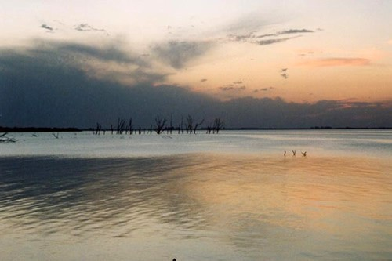
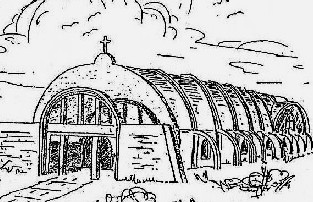
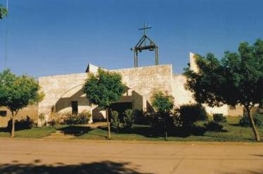
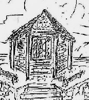
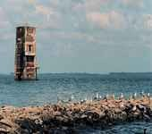
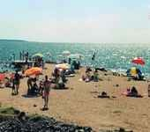
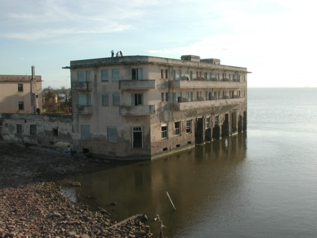
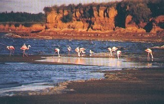
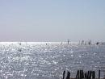

 |
Ansenuza... ¿Hasta Cuándo? Por: Graciela María Casartelli. Diciembre 2007 |
Introducción: Con este objetivo he visitado varias direcciones en internet*, tratando de efectuar una síntesis apretada de cuáles han sido sus vivencias más significativas, en los últimos tiempos.
Las aguas, que constituyen un verdadero
mar, poseen propiedades terapéuticas así como el barro.
Allí, se practica turismo ecológico; contándose unas
300 especies de aves diferentes. Los años sucesivos, hasta la actualidad, se caracterizaron por aportes de precipitaciones superiores a los medios históricos y en el año 2003, la cota histórica se vio superada, alcanzando un nivel de 71.90 m.s.n.m., provocando en la actualidad el constante ingreso de las aguas dentro de la urbe como consecuencia del viento y oleaje actuante sobre el espejo de agua. En este entorno de tragedia, lucha y esperanza a merced de las aguas, sucedió otro, que enlaza esos lugares con la situación socio-política e histórica de la segunda guerra mundial y de la cual, queda el recóndito Gran Hotel Viena, con partes actualmente destruidas por las aguas y supuestos misteriosos vestigios del accionar nazi en nuestro país.
En cuanto a Ansenuza, era una bellísima
diosa india del agua, que habitaba en su palacio de cristal del Mar. Pero,
era una deidad cruel y egoísta, pues la única ofrenda que
la volvía propicia era el primer amor de los jóvenes.
|
Ansenuza:
no conforme, con la concesión eterna de tu amado. Sigues de los mancebos, reclamando el primer amor: el corazón entregado… A tu enamorado, |
Con la seductora atracción de tus
mareas, en las noches de luna llena, avanzas sobre las obras de los hombres para poseerlas; de sus moradas te haces dueña. |
Cuando retraes tus olas,
en advenediza conquista, asestas el sol de los días para avanzar nuevamente… más lejos. De muchos de los pescadores te cobras la vida, Su fe procuras impiadosa, |
(1) |
Santa Teresa, nacida en 1931 y Patrona del Pueblo, bajo las aguas, desaparecida en 1980. |
Virgen del Valle, desde 1964; te apoderaste en 1978, y en 1992, fue dinamitada. |
 (1) |
 |
Sus dos imágenes perviven, en los altares de la esperanza. Desde 0ctubre de 2005, están depositados, en la nueva iglesia de Miramar. |
También pervive la Ermita, María Estrella del Mar; a orillas de la Laguna. La fe de los fieles venció por entonces, tu avance… |
 (1) |
Lástima; el tiempo,
brindándote ayuda,
cerró las puertas de la de San Antonio, edificada en 1951, y mantenida, por los Franciscanos de Croacia, hasta 1970, en que cerraste sus puertas con beneplácito. |
 |
Mientras tanto,
|
No conforme con la pasión de tu amado,
|
|
 |
Seduces las ansias de los visitantes; con tu eco nocturno, llamas sus corazones; con la sal curas sus heridas y luego el alma, les reclamas. |
Ansenuza… ¿Hasta cuándo? |
 |
Te vales de las ambiciones
de los hombres; su historia de desesperación y también su odio. Los multiplicas en tus olas, arrojándoles al vacío de tu profundo espejo. |
 |
Ansenuza… ¿Hasta cuándo? Jugarás con los sentimientos
Todos los derechos reservados de autor. |
Nota: Cabe aclarar, que el gobierno de Miramar,
se encuentra empeñado actualmente en construir otra obra costanera destinada
a
detener la creciente del agua (Noviembre 07)

*http://www.miramar.gov.ar/brevehistoria.htm;
http://www.miramarcordoba.com.ar/historia.html
http://www.lanacion.com.ar/Archivo/nota.asp?nota_id=779083
otras...
http://www.miramarcordoba.com.ar/fotos_1.html;
http://www.visitingargentina.com/blog/miramar-2.htm;http://www.argentour.com/images/mar_chiquita4.jpg;www.cordobaambiente.cba.gov.ar/images/laguna
(fotografías)
(1) Los datos históricosreferidos a los edificios de culto católico,
así como sus bosquejos, son parte de un folleto que me entregaron gentilmente
en el Area Turismo
de la Municipalidad de Miramar.
Musicalización: Liberace. Love Story